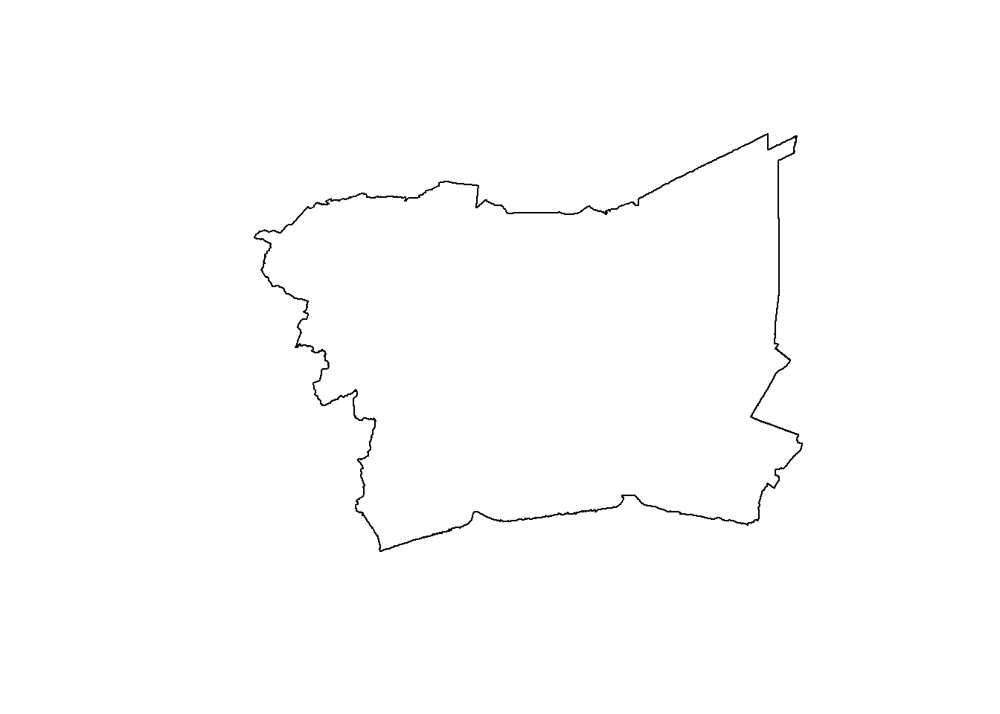
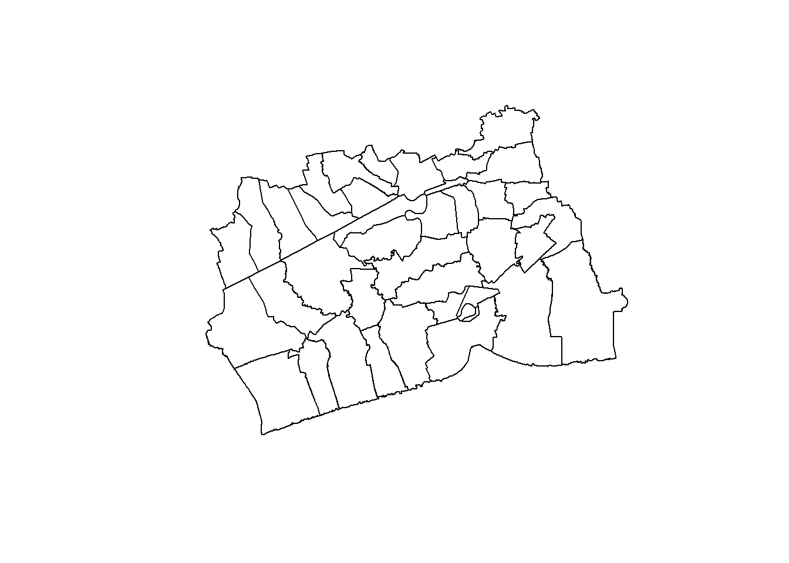
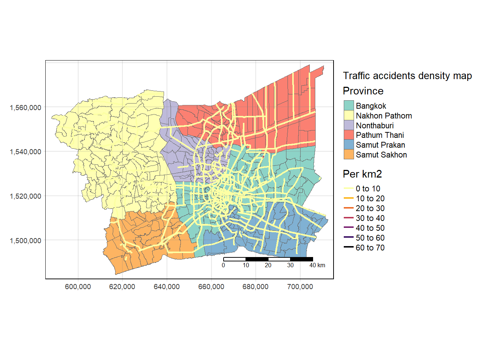

pacman::p_load(sf, raster, spatstat, sparr, tmap, tidyverse, spNetwork)Take Home Exercise 1
Take-home Exercise 1: Geospatial Analytics for Public Good
Setting the Scene
According to World Health Organisation (WHO), road traffic accidents cause the death of approximately 1.19 million people each year leave between 20 and 50 million people with non-fatal injuries. More than half of all road traffic deaths occur among vulnerable road users, such as pedestrians, cyclists and motorcyclists.
Road traffic injuries are the leading cause of death for children and young adults aged 5–29. Yet two thirds of road traffic fatalities occur among people of working age (18–59 years). Nine in 10 fatalities on the roads occur in low- and middle-income countries, even though these countries have around 60% of the world’s vehicles.
In addition to the human suffering caused by road traffic injuries, they also incur a heavy economic burden on victims and their families, both through treatment costs for the injured and through loss of productivity of those killed or disabled. More broadly, road traffic injuries have a serious impact on national economies, costing countries 3% of their annual gross domestic product.
Thailand’s roads are the deadliest in Southeast Asia and among the worst in the world, according to the World Health Organisation. About 20,000 people die in road accidents each year, or about 56 deaths a day (WHO).
Between 2014 and 2021, Thailand experienced a notable increase in accident frequencies. Specifically, 19% of all accidents in Thailand occurred on the national highways, which constituted the primary public thoroughfares connecting various regions, provinces, districts, and significant locations within a comprehensive network. Within the broader context of accidents across the country, there existed a considerable 66% likelihood of encountering accident-prone zones, often termed ‘black spots,’ distributed as follows: 66% on straight road segments, 13% at curves, 6% at median points of cross-shaped intersections, 5% at T-shaped intersections and Y-shaped intersections, 3% at cross-shaped intersections, 2% on bridges, and 2% on steep slopes, respectively.
Objectives
By and large, road traffic accidents can be attributed by two major factors, namely: behavioural and environmental factors. Behavioural factors in driving are considered to be major causes of traffic accidents either in direct or indirect manner (Lewin, 1982). These factors can be further grouped into two as, driver behavior (also called driver/driving style) and driver performance, in other words, driver/driving skills (Elander, West, & French, 1993). Environmental factors, on the other hand, includes but not limited to weather condition such as poor visibility during heavy rain or foggy and road conditions such as sharp bend road, slippery slope road, and blind spot.
Previous studies have demonstrated the significant potential of Spatial Point Patterns Analysis (SPPA) in exploring and identifying factors influencing road traffic accidents. However, these studies often focus solely on either behavioral or environmental factors, with limited consideration of temporal factors such as season, day of the week, or time of day.
In view of this, you are tasked to discover factors affecting road traffic accidents in the Bangkok Metropolitan Region BMR by employing both spatial spatio-temporal point patterns analysis methods.
The specific objectives of this take-home exercise are as follows:
To visualize the spatio-temporal dynamics of road traffic accidents in BMR using appropriate statistical graphics and geovisualization methods.
To conduct detailed spatial analysis of road traffic accidents using appropriate Network Spatial Point Patterns Analysis methods.
To conduct detailed spatio-temporal analysis of road traffic accidents using appropriate Temporal Network Spatial Point Patterns Analysis methods.
The Data
For the purpose of this exercise, three basic data sets must be used, they are:
2 Getting Started
2.1 Objectives
The specific objectives of this take-home exercise are as follows:
To visualize the spatio-temporal dynamics of road traffic accidents in BMR using appropriate statistical graphics and geovisualization methods.
To conduct detailed spatial analysis of road traffic accidents using appropriate Network Spatial Point Patterns Analysis methods.
To conduct detailed spatio-temporal analysis of road traffic accidents using appropriate Temporal Network Spatial Point Patterns Analysis methods.
2.2 Area of Study
Study Area is Bangkok Metropolitan Region
WGS 84 UTM zone 47N EPSG code of bangkok: 32647
2.3 Loading the tools needed in R
The code chunk below uses pacman to install and load the sf, raster, spatstat, tmap, tidyverse, sparr, and spNetwork tools
Explanations for the imported library:
sf for handling geospatial data
tmap for visualizing geospatial
knitr for creating html tables
Hmisc for summary statistics
DT library to create interactive html tables
raster for handling raster data in R,
spatstat for performing Spatial Point Patterns Analysis such as kcross, Lcross, etc.,
sparr provides functions to estimate fixed and adaptive kernel-smoothed spatial relative risk surfaces via the density-ratio method and perform subsequent inference. Fixed-bandwidth spatiotemporal density and relative risk estimation is also supported
tidyverse, a family of R packages that provide functions to perform common data science tasks including and not limited to data import, data transformation, data wrangling and data visualisation.
3 Data Preparation
3.1 Downloading the data
The following data sets have been used in this exercise and can be downloaded by clicking the links below:
3.2 Importing the data in R
Make csv sf geometry must be linestring not multipleline detect driver behavior detect enviromental behavior use to subset point events accident causes accident data point
select different regions from wikipedia of the region do the analysis of the regions like the previous exercise rds folder, make subsets in rds date time field posix incident datetime
Here we import the accident data and wrangle it so it can be used for our analytics.
rdacc_sf = read_csv("data/rawdata/thai_road_accident_2019_2022.csv") %>%
filter(!is.na(longitude) & longitude != "",
!is.na(latitude) & latitude != "") %>%
st_as_sf(coords = c(
"longitude", "latitude"),
crs=4326) %>%
st_transform(crs = 32647) %>%
mutate(HourOfDay = hour(incident_datetime))%>%
mutate(Month_num = month(incident_datetime)) %>%
mutate(Month_fac = month(incident_datetime,
label = TRUE,
abbr = TRUE)) %>%
mutate(dayofweek_num = weekdays(incident_datetime))%>%
mutate(dayofweek_fac = as.numeric(format(incident_datetime, "%u")))We import the following dataset as it contains all sub sections of the administrative area aswell: tha_admbnda_adm3_rtsd_20220121
adm = st_read(dsn = "data/rawdata/",
layer = "tha_admbnda_adm3_rtsd_20220121")And we transform the data to the right CRS
adm = st_transform(adm, 32647)Here we show the dataset
admAnd the roads.
roads = st_read(dsn = "data/rawdata/",
layer = "hotosm_tha_roads_lines_shp")MAKING RDS FILES
Now we are creating and reading RDS files for different datasets, specifically for accidents, administrative boundaries, and roads. Also we’re performing some data manipulation on the roads dataset, such as filtering and selecting specific columns, and setting the coordinate reference system (CRS) to 4326. ::: panel-tabset ## Accidents
write_rds(rdacc_sf, "data/rds/rdacc_sf.rds")rdacc_sf = read_rds("data/rds/rdacc_sf.rds")Adm
write_rds(adm, "data/rds/adm.rds")adm = read_rds("data/rds/adm.rds")Roads
write_rds(roads, "data/rds/roads.rds")roads = read_rds("data/rds/roads.rds")useroads = c("motorway","primary","secondary")
network = subset(roads, highway %in% useroads)
network <- subset(network, select = -c(name, surface, smoothness, width, lanes, oneway, bridge, layer, source, name_th))
network <- st_set_crs(network, 4326):::
Taking a “glimpse” at the data
glimpse(rdacc_sf)glimpse(adm)Rows: 7,425
Columns: 23
$ Shape_Leng <dbl> 0.04769920, 0.03355050, 0.01728931, 0.01904576, 0.01523190,…
$ Shape_Area <dbl> 1.284175e-04, 6.068479e-05, 1.769761e-05, 1.920433e-05, 1.2…
$ ADM3_EN <chr> "Phraborom Maharatchawang", "Wang Burapha Phirom", "Wat Rat…
$ ADM3_TH <chr> "พระบรมมหาราชวัง", "วังบูรพาภิรมย์", "วัดราชบพิธ", "สำราญราษฎร์", "…
$ ADM3_PCODE <chr> "TH100101", "TH100102", "TH100103", "TH100104", "TH100105",…
$ ADM3_REF <chr> NA, NA, NA, NA, NA, NA, NA, NA, NA, NA, NA, NA, NA, NA, NA,…
$ ADM3ALT1EN <chr> NA, NA, NA, NA, NA, NA, NA, NA, NA, NA, NA, NA, NA, NA, NA,…
$ ADM3ALT2EN <chr> NA, NA, NA, NA, NA, NA, NA, NA, NA, NA, NA, NA, NA, NA, NA,…
$ ADM3ALT1TH <chr> NA, NA, NA, NA, NA, NA, NA, NA, NA, NA, NA, NA, NA, NA, NA,…
$ ADM3ALT2TH <chr> NA, NA, NA, NA, NA, NA, NA, NA, NA, NA, NA, NA, NA, NA, NA,…
$ ADM2_EN <chr> "Phra Nakhon", "Phra Nakhon", "Phra Nakhon", "Phra Nakhon",…
$ ADM2_TH <chr> "พระนคร", "พระนคร", "พระนคร", "พระนคร", "พระนคร", "พระนคร",…
$ ADM2_PCODE <chr> "TH1001", "TH1001", "TH1001", "TH1001", "TH1001", "TH1001",…
$ ADM1_EN <chr> "Bangkok", "Bangkok", "Bangkok", "Bangkok", "Bangkok", "Ban…
$ ADM1_TH <chr> "กรุงเทพมหานคร", "กรุงเทพมหานคร", "กรุงเทพมหานคร", "กรุงเทพมหาน…
$ ADM1_PCODE <chr> "TH10", "TH10", "TH10", "TH10", "TH10", "TH10", "TH10", "TH…
$ ADM0_EN <chr> "Thailand", "Thailand", "Thailand", "Thailand", "Thailand",…
$ ADM0_TH <chr> "ประเทศไทย", "ประเทศไทย", "ประเทศไทย", "ประเทศไทย", "ประเทศ…
$ ADM0_PCODE <chr> "TH", "TH", "TH", "TH", "TH", "TH", "TH", "TH", "TH", "TH",…
$ date <date> 2019-02-18, 2019-02-18, 2019-02-18, 2019-02-18, 2019-02-18…
$ validOn <date> 2022-01-22, 2022-01-22, 2022-01-22, 2022-01-22, 2022-01-22…
$ validTo <date> -001-11-30, -001-11-30, -001-11-30, -001-11-30, -001-11-30…
$ geometry <MULTIPOLYGON [m]> MULTIPOLYGON (((661579 1521..., MULTIPOLYGON (…glimpse(network)Thailand
plot(adm$geometry)our data still has all the provinces of thailand which we dont need, we only need the bankok metropolitan region. This means we will have to exclude some of the data.
First we create a list of the Bankok Metropolan area
BMRC = c("Bangkok", "Nakhon Pathom", "Nonthaburi", "Pathum Thani", "Samut Prakan", "Samut Sakhon")then we create a subset of the dataset to focus our data to our use case
BMR = subset(adm, ADM1_EN %in% BMRC)We can do the same for the accidents dataset since we don’t need the data from outside the region of study
BMRACC = subset(rdacc_sf, province_en %in% BMRC)And we write both smaller data sets to our rds folder BMR
write_rds(BMR, "data/rds/BMR.rds")read_rds("data/rds/BMR.rds")Simple feature collection with 477 features and 22 fields
Geometry type: MULTIPOLYGON
Dimension: XY
Bounding box: xmin: 587893.5 ymin: 1484414 xmax: 712440.5 ymax: 1579076
Projected CRS: WGS 84 / UTM zone 47N
First 10 features:
Shape_Leng Shape_Area ADM3_EN ADM3_TH ADM3_PCODE
1 0.04769920 1.284175e-04 Phraborom Maharatchawang พระบรมมหาราชวัง TH100101
2 0.03355050 6.068479e-05 Wang Burapha Phirom วังบูรพาภิรมย์ TH100102
3 0.01728931 1.769761e-05 Wat Ratchabophit วัดราชบพิธ TH100103
4 0.01904576 1.920433e-05 Samran Rat สำราญราษฎร์ TH100104
5 0.01523190 1.257312e-05 San Chaopho Suea ศาลเจ้าพ่อเสือ TH100105
6 0.01456981 1.292603e-05 Sao Chingcha เสาชิงช้า TH100106
7 0.03114989 4.079321e-05 Bowon Niwet บวรนิเวศ TH100107
8 0.01821968 1.566010e-05 Talat Yot ตลาดยอด TH100108
9 0.02230278 2.826988e-05 Chana Songkhram ชนะสงคราม TH100109
10 0.02904022 3.448890e-05 Ban Phan Thom บ้านพานถม TH100110
ADM3_REF ADM3ALT1EN ADM3ALT2EN ADM3ALT1TH ADM3ALT2TH ADM2_EN ADM2_TH
1 <NA> <NA> <NA> <NA> <NA> Phra Nakhon พระนคร
2 <NA> <NA> <NA> <NA> <NA> Phra Nakhon พระนคร
3 <NA> <NA> <NA> <NA> <NA> Phra Nakhon พระนคร
4 <NA> <NA> <NA> <NA> <NA> Phra Nakhon พระนคร
5 <NA> <NA> <NA> <NA> <NA> Phra Nakhon พระนคร
6 <NA> <NA> <NA> <NA> <NA> Phra Nakhon พระนคร
7 <NA> <NA> <NA> <NA> <NA> Phra Nakhon พระนคร
8 <NA> <NA> <NA> <NA> <NA> Phra Nakhon พระนคร
9 <NA> <NA> <NA> <NA> <NA> Phra Nakhon พระนคร
10 <NA> <NA> <NA> <NA> <NA> Phra Nakhon พระนคร
ADM2_PCODE ADM1_EN ADM1_TH ADM1_PCODE ADM0_EN ADM0_TH ADM0_PCODE
1 TH1001 Bangkok กรุงเทพมหานคร TH10 Thailand ประเทศไทย TH
2 TH1001 Bangkok กรุงเทพมหานคร TH10 Thailand ประเทศไทย TH
3 TH1001 Bangkok กรุงเทพมหานคร TH10 Thailand ประเทศไทย TH
4 TH1001 Bangkok กรุงเทพมหานคร TH10 Thailand ประเทศไทย TH
5 TH1001 Bangkok กรุงเทพมหานคร TH10 Thailand ประเทศไทย TH
6 TH1001 Bangkok กรุงเทพมหานคร TH10 Thailand ประเทศไทย TH
7 TH1001 Bangkok กรุงเทพมหานคร TH10 Thailand ประเทศไทย TH
8 TH1001 Bangkok กรุงเทพมหานคร TH10 Thailand ประเทศไทย TH
9 TH1001 Bangkok กรุงเทพมหานคร TH10 Thailand ประเทศไทย TH
10 TH1001 Bangkok กรุงเทพมหานคร TH10 Thailand ประเทศไทย TH
date validOn validTo geometry
1 2019-02-18 2022-01-22 -001-11-30 MULTIPOLYGON (((661579 1521...
2 2019-02-18 2022-01-22 -001-11-30 MULTIPOLYGON (((662319.1 15...
3 2019-02-18 2022-01-22 -001-11-30 MULTIPOLYGON (((662329.2 15...
4 2019-02-18 2022-01-22 -001-11-30 MULTIPOLYGON (((662773.1 15...
5 2019-02-18 2022-01-22 -001-11-30 MULTIPOLYGON (((662036.7 15...
6 2019-02-18 2022-01-22 -001-11-30 MULTIPOLYGON (((662392.7 15...
7 2019-02-18 2022-01-22 -001-11-30 MULTIPOLYGON (((662789.3 15...
8 2019-02-18 2022-01-22 -001-11-30 MULTIPOLYGON (((662184.9 15...
9 2019-02-18 2022-01-22 -001-11-30 MULTIPOLYGON (((662015.7 15...
10 2019-02-18 2022-01-22 -001-11-30 MULTIPOLYGON (((662999.2 15...fixing roads
We use st union on the administrative boundary to get the outline of the BMR
u = st_union(BMR)
u = st_transform(u, 4326)
plot(u)
# assume 'roads' is your multilinestring data and 'study_area' is your polygon data
network <- st_intersection(network , u)write_rds(network, "data/rds/network.rds")##| eval: false
network = read_rds("data/rds/network.rds")Roads plotted
plot(network$geometry)Accidents
write_rds(BMRACC, "data/rds/BMRACC.rds")The Bangkok Metropolitan Region
The Bangkok Metropolitan Region is the urban region surrounding the metropolis of Bangkok. The area covers an area of 7,762 km2 and has a population of 17,400,000.
Different parts of the region There region consists out of 6 subregions named: Bangkok, Nothaburi, Nakhon Pathom, Pathum Thani, Samut Prakan, and Samut Sakhon
plot(BMR["ADM1_EN"])We can also make sub sets of the different parts of the region
bk <- BMR %>%
filter(ADM1_EN == "Bangkok")
nhb <- BMR %>%
filter(ADM1_EN == "Nonthaburi")
np <- BMR %>%
filter(ADM1_EN == "Nakhon Pathom")
pt <- BMR %>%
filter(ADM1_EN == "Pathum Thani")
sp <- BMR %>%
filter(ADM1_EN == "Samut Prakan")
ss <- BMR %>%
filter(ADM1_EN == "Samut Sakhon")plot(st_geometry(bk))
plot(st_geometry(nhb))plot(st_geometry(np))
plot(st_geometry(pt))plot(st_geometry(sp))
plot(st_geometry(ss))
Now we look at the different accidents in the BMR
tmap_mode('plot')
tm_shape(BMR)+
tm_polygons() +
tm_shape(BMRACC) +
tm_dots(size = 0.1, col = "red") 
Re-assigning the EPSG code ::: pannel-tabset ## BMR
BMR32647 <- st_set_crs(BMR, 32647)
BMR32647 = st_transform(BMR32647, crs = 32647)ACC
BMRACC32647 <- st_set_crs(BMRACC, 32647)
BMRACC32647 = st_transform(BMRACC32647, crs = 32647)Network
network32647 <- st_set_crs(network, 32647)
network32647 = st_transform(network32647, crs = 32647):::
BMR_ACC = st_join(BMR32647, BMRACC32647, by = c("ADM1_EN" = "province_en"))tmap_mode("plot")
qtm(BMR_ACC,
fill = "number_of_injuries")
tm_shape(BMR_ACC)+
tm_polygons("number_of_vehicles_involved")Spatio-Temporal Point Patterns Analysis
Overview
The research questions
The specific questions we would like to answer are:
are the locations of the traffic accidents in Bangkok Metropolitan Region spatial and spatio-temporally independent? if the answer is NO, where and when the observed traffic accidents locations tend to cluster?
Converting OWIN
Next, as.owin() is used to convert BMR into an owin object.
bmr_owin = as.owin(BMR)
bmr_owinwindow: polygonal boundary
enclosing rectangle: [587893.5, 712440.5] x [1484413.7, 1579076.3] unitsNext, class() is used to confirm if the output is indeed an owin object.
class(bmr_owin)[1] "owin"Preparing Traffic Accident Data
Above we already have imported the traffic accident data and made it focus on our study area
Visualising the Traffic Accidents
Overall Plot
This plot shows all traffic accidents in the region
tmap_mode('plot')
tm_shape(BMR)+
tm_polygons() +
tm_shape(BMRACC) +
tm_dots()Visuaising geographic distribution of traffic accidents by month
tm_shape(BMR)+
tm_polygons() +
tm_shape(BMRACC) +
tm_dots(size = 0.1) +
tm_facets(by="Month_fac",
free.coords=FALSE,
drop.units = TRUE)Computing STKDE by Month/Season
In this section, we will compute STKDE by using spattemp.density() of sparr package.
Meteorological Seasons Spring: March-May Summer: June-August Autumn: September-November Winter: December-February
The code chunk below is used to remove the unwanted fields from fire_sf sf data.frame. This is because as.ppp() only need the mark field and geometry field from the input sf data.frame.
acc_month <- BMRACC %>%
select(Month_num)The code chunk below is used to derive a ppp object called acc_month from acc_month sf data.frame.
acc_month_ppp = as.ppp(acc_month)
acc_month_pppMarked planar point pattern: 12986 points
marks are numeric, of storage type 'double'
window: rectangle = [591277.5, 710166.1] x [1486845.7, 1576520.5] unitssummary(acc_month_ppp)Marked planar point pattern: 12986 points
Average intensity 1.218049e-06 points per square unit
*Pattern contains duplicated points*
Coordinates are given to 10 decimal places
marks are numeric, of type 'double'
Summary:
Min. 1st Qu. Median Mean 3rd Qu. Max.
1.000 4.000 7.000 6.666 10.000 12.000
Window: rectangle = [591277.5, 710166.1] x [1486845.7, 1576520.5] units
(118900 x 89670 units)
Window area = 10661300000 square unitsany(duplicated(acc_month_ppp))[1] TRUEsum(multiplicity(acc_month_ppp) > 1)[1] 639JITTERING
acc_month_ppp_jit = rjitter(acc_month_ppp,
retry =TRUE,
nsim=1,
drop=TRUE)any(duplicated(acc_month_ppp_jit))[1] FALSEThe code chunk below is used to combine ppp and owin objects into one.
acc_month_owin = acc_month_ppp[bmr_owin]
summary(acc_month_owin)Marked planar point pattern: 12986 points
Average intensity 1.693312e-06 points per square unit
*Pattern contains duplicated points*
Coordinates are given to 10 decimal places
marks are numeric, of type 'double'
Summary:
Min. 1st Qu. Median Mean 3rd Qu. Max.
1.000 4.000 7.000 6.666 10.000 12.000
Window: polygonal boundary
single connected closed polygon with 13779 vertices
enclosing rectangle: [587893.5, 712440.5] x [1484413.7, 1579076.3] units
(124500 x 94660 units)
Window area = 7668990000 square units
Fraction of frame area: 0.65As a good practice, plot() is used to plot ff_owin so that we can examine the correctness of the output object.
plot(acc_month_owin)
Next, spatttemp.density() of sparr package is used to compute the STKDE.
st_kde = spattemp.density(acc_month_owin)
summary(st_kde)Spatiotemporal Kernel Density Estimate
Bandwidths
h = 4258.283 (spatial)
lambda = 0.0114 (temporal)
No. of observations
12986
Spatial bound
Type: polygonal
2D enclosure: [587893.5, 712440.5] x [1484414, 1579076]
Temporal bound
[1, 12]
Evaluation
128 x 128 x 12 trivariate lattice
Density range: [4.925709e-18, 6.226576e-09]In the code chunk below, plot() of R base is used to the KDE ### Spring
tims <- c(3,4,5)
#par(mfcol=c(4,3))
for(i in tims){
plot(st_kde, i,
override.par=FALSE,
fix.range=TRUE,
main=paste("KDE at month",i))
}

tims <- c(6,7,8)
#par(mfcol=c(2,3))
for(i in tims){
plot(st_kde, i,
override.par=FALSE,
fix.range=TRUE,
main=paste("KDE at month",i))
}

tims <- c(9,10,11)
#par(mfcol=c(2,3))
for(i in tims){
plot(st_kde, i,
override.par=FALSE,
fix.range=TRUE,
main=paste("KDE at month",i))
}

tims <- c(12,1,2)
#par(mfcol=c(2,3))
for(i in tims){
plot(st_kde, i,
override.par=FALSE,
fix.range=TRUE,
main=paste("KDE at month",i))
}
Computing STKDE by traffic accidents by day of week
In this section, we will compute the STKDE of traffic accidents by
Creating ppp object
In the code chunk below, DayofWeek field is included in the output ppp object.
acc_wday_ppp <- BMRACC %>%
select(dayofweek_fac) %>%
as.ppp()Including Owin object
Next, code chunk below is used to combine the ppp object and the owin object.
acc_wday_owin <- acc_wday_ppp[bmr_owin]
summary(acc_wday_owin)Marked planar point pattern: 12986 points
Average intensity 1.693312e-06 points per square unit
*Pattern contains duplicated points*
Coordinates are given to 10 decimal places
marks are numeric, of type 'double'
Summary:
Min. 1st Qu. Median Mean 3rd Qu. Max.
1.000 2.000 4.000 4.061 6.000 7.000
Window: polygonal boundary
single connected closed polygon with 13779 vertices
enclosing rectangle: [587893.5, 712440.5] x [1484413.7, 1579076.3] units
(124500 x 94660 units)
Window area = 7668990000 square units
Fraction of frame area: 0.65kde_wday <- spattemp.density(
acc_wday_owin)
summary(kde_wday)Spatiotemporal Kernel Density Estimate
Bandwidths
h = 4258.283 (spatial)
lambda = 0.0064 (temporal)
No. of observations
12986
Spatial bound
Type: polygonal
2D enclosure: [587893.5, 712440.5] x [1484414, 1579076]
Temporal bound
[1, 7]
Evaluation
128 x 128 x 7 trivariate lattice
Density range: [1.87865e-15, 1.743864e-08]plot(kde_wday)


Computing STKDE by time of day
In this section, we will compute STKDE by using spattemp.density() of sparr package.
::: panel-tabset ### Extracting traffic accidents by Time of day
The code chunk below is used to remove the unwanted fields from hod_sf sf data.frame. This is because as.ppp() only need the mark field and geometry field from the input sf data.frame.
acc_hod <- BMRACC %>%
select(HourOfDay)Creating ppp
The code chunk below is used to derive a ppp object called acc_month from acc_month sf data.frame.
acc_hod_ppp = as.ppp(acc_hod)
acc_hod_pppMarked planar point pattern: 12986 points
marks are numeric, of storage type 'integer'
window: rectangle = [591277.5, 710166.1] x [1486845.7, 1576520.5] unitssummary(acc_hod_ppp)Marked planar point pattern: 12986 points
Average intensity 1.218049e-06 points per square unit
*Pattern contains duplicated points*
Coordinates are given to 10 decimal places
marks are numeric, of type 'integer'
Summary:
Min. 1st Qu. Median Mean 3rd Qu. Max.
0.00 7.00 13.00 12.33 18.00 23.00
Window: rectangle = [591277.5, 710166.1] x [1486845.7, 1576520.5] units
(118900 x 89670 units)
Window area = 10661300000 square unitsany(duplicated(acc_hod_ppp))[1] TRUEsum(multiplicity(acc_hod_ppp) > 1)[1] 395JITTERING
acc_hod_ppp_jit = rjitter(acc_hod_ppp,
retry =TRUE,
nsim=1,
drop=TRUE)any(duplicated(acc_hod_ppp_jit))[1] FALSEIncluding Owin Object
The code chunk below is used to combine ppp and owin objects into one.
acc_hod_owin = acc_hod_ppp[bmr_owin]
summary(acc_hod_owin)Marked planar point pattern: 12986 points
Average intensity 1.693312e-06 points per square unit
*Pattern contains duplicated points*
Coordinates are given to 10 decimal places
marks are numeric, of type 'integer'
Summary:
Min. 1st Qu. Median Mean 3rd Qu. Max.
0.00 7.00 13.00 12.33 18.00 23.00
Window: polygonal boundary
single connected closed polygon with 13779 vertices
enclosing rectangle: [587893.5, 712440.5] x [1484413.7, 1579076.3] units
(124500 x 94660 units)
Window area = 7668990000 square units
Fraction of frame area: 0.65As a good practice, plot() is used to plot ff_owin so that we can examine the correctness of the output object.
plot(acc_hod_owin)
Computing Spatio-temporal KDE
Next, spatttemp.density() of sparr package is used to compute the STKDE.
st_kdehod = spattemp.density(acc_hod_owin)
summary(st_kdehod)Spatiotemporal Kernel Density Estimate
Bandwidths
h = 4258.283 (spatial)
lambda = 0.0306 (temporal)
No. of observations
12986
Spatial bound
Type: polygonal
2D enclosure: [587893.5, 712440.5] x [1484414, 1579076]
Temporal bound
[0, 23]
Evaluation
128 x 128 x 24 trivariate lattice
Density range: [2.265524e-23, 7.132963e-10]Plotting the spatio-temporal KDE object
In the code chunk below, plot() of R base is used to the KDE
tims <- c(0,1,2,3,4,5,6,7,8,9,10,11,12,13,14,15,16,17,18,19,20,21,22,23)
par(mfcol=c(2,3))
for(i in tims){
plot(st_kdehod, i,
override.par=FALSE,
fix.range=TRUE,
main=paste("KDE at Hour",i))
}


Geospatial data wrangling
Converting from sf format into spatstat’s ppp format
BMRACC_ppp = as.ppp(BMRACC)
BMRACC_pppMarked planar point pattern: 12986 points
marks are numeric, of storage type 'double'
window: rectangle = [591277.5, 710166.1] x [1486845.7, 1576520.5] unitsplot(BMRACC_ppp)
summary(BMRACC_ppp)Marked planar point pattern: 12986 points
Average intensity 1.218049e-06 points per square unit
Coordinates are given to 10 decimal places
marks are numeric, of type 'double'
Summary:
Min. 1st Qu. Median Mean 3rd Qu. Max.
571882 3788970 3834532 4314457 6092694 7570954
Window: rectangle = [591277.5, 710166.1] x [1486845.7, 1576520.5] units
(118900 x 89670 units)
Window area = 10661300000 square unitsany(duplicated(BMRACC_ppp))[1] FALSEmultiplicity(BMRACC_ppp)sum(multiplicity(BMRACC_ppp) > 1)[1] 0bmr_owin = as.owin(BMR)plot(bmr_owin)summary(bmr_owin)Window: polygonal boundary
single connected closed polygon with 13779 vertices
enclosing rectangle: [587893.5, 712440.5] x [1484413.7, 1579076.3] units
(124500 x 94660 units)
Window area = 7668990000 square units
Fraction of frame area: 0.65BMRACCMAP_ppp = BMRACC_ppp[bmr_owin] summary(BMRACCMAP_ppp)Marked planar point pattern: 12986 points
Average intensity 1.693312e-06 points per square unit
Coordinates are given to 10 decimal places
marks are numeric, of type 'double'
Summary:
Min. 1st Qu. Median Mean 3rd Qu. Max.
571882 3788970 3834532 4314457 6092694 7570954
Window: polygonal boundary
single connected closed polygon with 13779 vertices
enclosing rectangle: [587893.5, 712440.5] x [1484413.7, 1579076.3] units
(124500 x 94660 units)
Window area = 7668990000 square units
Fraction of frame area: 0.65plot(BMRACCMAP_ppp)bk_owin = as.owin(bk)
nhb_owin = as.owin(nhb)
np_owin = as.owin(np)
pt_owin = as.owin(pt)
sp_owin = as.owin(sp)
ss_owin = as.owin(ss)accidents_bk_ppp = BMRACC_ppp[bk_owin]
accidents_nhb_ppp = BMRACC_ppp[nhb_owin]
accidents_np_ppp = BMRACC_ppp[np_owin]
accidents_pt_ppp = BMRACC_ppp[pt_owin]
accidents_sp_ppp = BMRACC_ppp[sp_owin]
accidents_ss_ppp = BMRACC_ppp[ss_owin]plot(accidents_bk_ppp)plot(accidents_bk_ppp, main="Bangkok" )
plot(accidents_nhb_ppp, main="Nonthaburi")plot(accidents_np_ppp, main="Nakhon Pathom") 
plot(accidents_pt_ppp, main="Pathum Thani") 
plot(accidents_sp_ppp, main="Samut Prakan")
plot(accidents_ss_ppp, main="Samut Sakhon")
Network constraint Spatial Point Pattern Analysis
Network constrained Spatial Point Patterns Analysis (NetSPAA) is a collection of spatial point patterns analysis methods special developed for analysing spatial point event occurs on or alongside network. The spatial point event can be locations of traffic accident or childcare centre for example. The network, on the other hand can be a road network or river network.
to derive network kernel density estimation (NKDE), and to perform network G-function and k-function analysis
# |eval: false
# loading the road network
tm_shape(network) +
tm_lines(col = "black") +
tm_shape(BMRACC) +
tm_dots(col = "red", size = 0.1)+
tm_shape(BMR)+
tm_polygons()First we plot the road network and the accidents
plot(st_geometry(network))+
plot(BMRACC,add=T,col='red',pch = 19)integer(0)Then we need to change the network geometry to line string to enable the nkde to be possible.
network <- st_cast(network, "LINESTRING")Now we will create the lixels.
lixels <- lixelize_lines(network,
700,
mindist = 375)Continuing we create the variable samples.
samples <- lines_center(lixels) And we make sure the data sets are in the same CRS.
samples = st_transform(samples, 32647)network = st_transform(network, 32647)Now we render the NKDE Due to the limited processing power of my laptop this process is not fully possible on my system.
densities <- nkde(network,
events = BMRACC,
w = rep(1, nrow(BMRACC)),
samples = samples,
kernel_name = "quartic",
bw = 300,
div= "bw",
method = "simple",
digits = 1,
tol = 1,
grid_shape = c(1,1),
max_depth = 8,
agg = 100,
sparse = TRUE,
verbose = FALSE)samples$density <- densities
lixels$density <- densitiesrescaling to help the mapping
# rescaling to help the mapping
samples$density <- samples$density*10000
lixels$density <- lixels$density*10000Now we plot the NKDE and we see the heatmap on the network roadmap
tmap_mode('plot')
tm_shape(BMR)+
tm_polygons(col = "ADM1_EN", lwd = 0.5, title = "Province")+
tm_shape(lixels)+
tm_lines(col="density", lwd = 2, title.col = "Per km2", palette = "-inferno")+
tm_shape(filter(lixels, density == 0)) +
tm_lines(col="grey", lwd = 2, alpha = 0.2)+
tm_scale_bar() +
tm_grid(alpha =0.2) +
tm_layout(title = "Traffic accidents density map",legend.outside = TRUE)
tmap_mode('plot')
tm_shape(BMR)+
tm_polygons(col = "ADM1_EN", lwd = 0.5, title = "Province")+
tm_shape(BMRACC) +
tm_dots(size = 0.01) +
tm_facets(by="Month_fac",
free.coords=FALSE,
drop.units = TRUE)+
tm_shape(lixels)+
tm_lines(col="density", lwd = 2, title.col = "Per km2", palette = "-inferno")+
tm_shape(filter(lixels, density == 0)) +
tm_lines(col="grey", lwd = 2, alpha = 0.2)+
tm_scale_bar() +
tm_grid(alpha =0.2) +
tm_layout(title = "Traffic accidents density map",legend.outside = TRUE)
tmap_mode('plot')
tm_shape(BMR)+
tm_polygons(col = "ADM1_EN", lwd = 0.5, title = "Province")+
tm_shape(BMRACC) +
tm_dots(size = 0.01) +
tm_facets(by="HourOfDay",
free.coords=FALSE,
drop.units = TRUE)+
tm_shape(lixels)+
tm_lines(col="density", lwd = 2, title.col = "Per km2", palette = "-inferno")+
tm_shape(filter(lixels, density == 0)) +
tm_lines(col="grey", lwd = 2, alpha = 0.2)+
tm_scale_bar() +
tm_grid(alpha =0.2) +
tm_layout(title = "Traffic accidents density map",legend.outside = TRUE)tmap_mode('plot')
tm_shape(BMR)+
tm_polygons(col = "ADM1_EN", lwd = 0.5, title = "Province")+
tm_shape(BMRACC) +
tm_dots(size = 0.01) +
tm_facets(by="dayofweek_num",
free.coords=FALSE,
drop.units = TRUE)+
tm_shape(lixels)+
tm_lines(col="density", lwd = 2, title.col = "Per km2", palette = "-inferno")+
tm_shape(filter(lixels, density == 0)) +
tm_lines(col="grey", lwd = 2, alpha = 0.2)+
tm_scale_bar() +
tm_grid(alpha =0.2) +
tm_layout(title = "Traffic accidents density map",legend.outside = TRUE)Network Constrained G- and K-Function Analysis
In this section, we are going to perform complete spatial randomness (CSR) test by using kfunctions() of spNetwork package. The null hypothesis is defined as:
Ho: The observed spatial point events (i.e distribution of accidents) are uniformly distributed over a street network in Bangkok Metropolitan Region.
NOTE: due to the following error i was not able to finish the last section: Error in kfunctions(network, BMRACC, start = 0, end = 1000, agg = 2e+05, : After snapping the points on the network, some of them share the same location. To correct it, please consider setting or increasing the value of the parameter agg. They will be merged and their weights added)
kfun_BMRACC <- kfunctions(network,
BMRACC,
start = 0,
end = 1000,
agg = 200000,
step = 50,
width = 50,
nsim = 50,
resolution = 50,
verbose = FALSE,
conf_int = 0.05)kfun_BMRACC$plotkThe blue line is the empirical network K-function of the accidents in Bangkok Metropolitan Region. The gray envelop represents the results of the 50 simulations in the interval 2.5% - 97.5%. Because the blue line between the distance of 250m-400m are below the gray area, we can infer that the traffic accidents in bmr area resemble regular pattern at the distance of 250m-400m.
Conclusion
We have used different techniques to explore and analyse the different road accidents in the Bangkok metropolitan region. From this we can see that most accidents tend to happen at night as well as in the winter months.
By using the network constrained methods, we can see that most accidents also occur on the bigger roads connecting Bankok with